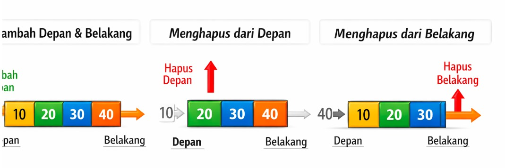

Deque
Deque memungkinkan penambahan dan penghapusan dari dua sisi (depan & belakang)
Ilustrasi

Implementasi Python
from collections import deque
# Membuat deque kosong
dq = deque()
print("=== TAMBAH DATA ===")
# Tambah dari belakang
dq.append(10)
dq.append(20)
dq.append(30)
dq.append(40)
print("Setelah tambah belakang:", list(dq))
print("\n=== HAPUS DARI DEPAN ===")
# Hapus dari depan
hapus_depan = dq.popleft()
print("Elemen yang dihapus dari depan:", hapus_depan)
print("Deque sekarang:", list(dq))
print("\n=== HAPUS DARI BELAKANG ===")
# Hapus dari belakang
hapus_belakang = dq.pop()
print("Elemen yang dihapus dari belakang:", hapus_belakang)
print("Deque sekarang:", list(dq))
Penjelasan :
Deque adalah struktur data yang memungkinkan: - penambahan data dari depan dan belakang - penghapusan data dari depan dan belakang Langkah pada program: 1. Menambahkan data 10, 20, 30, 40 ke deque 2. Menghapus elemen dari depan (10) 3. Menghapus elemen dari belakang (40)